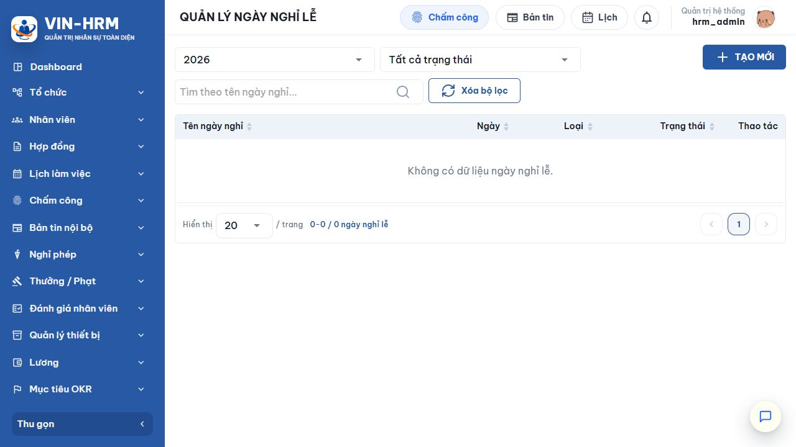
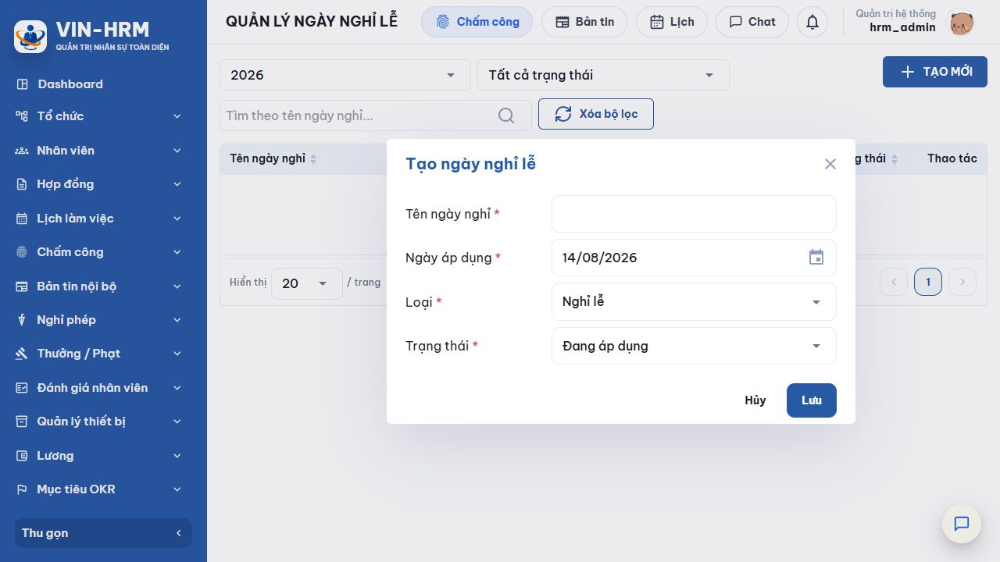

1. Mục đích và phạm vi
Danh mục ngày nghỉ lễ giúp VIN-HRM nhận biết các ngày nghỉ cấp doanh nghiệp. Dữ liệu đang áp dụng được dùng khi sinh lịch làm việc tự động, quy đổi giờ nghỉ trong kỳ lương và xác định hệ số tăng ca ngày lễ.
2. Truy cập
Mở Hệ thống → Danh mục ngày lễ. Chức năng cần quyền cấu hình hệ thống.

3. Bộ lọc và cột dữ liệu
| Thành phần | Cách dùng |
|---|---|
| Năm | Mặc định là năm hiện tại; chọn năm khác hoặc Tất cả năm để tìm dữ liệu cũ. |
| Trạng thái | Tất cả trạng thái, Đang áp dụng hoặc Ngừng áp dụng. |
| Tìm theo tên | Nhập một phần tên ngày nghỉ. |
| Ngày | Ngày duy nhất của bản ghi; hệ thống không cho hai bản ghi cùng ngày trong một doanh nghiệp. |
| Loại | Nghỉ lễ hoặc Nghỉ bù. |
| Thao tác | Sửa và xóa. Trạng thái được chỉnh trong biểu mẫu sửa. |
4. Tạo ngày nghỉ

- Chọn Tạo mới.
- Nhập tên ngày nghỉ rõ ràng.
- Chọn đúng ngày áp dụng.
- Chọn loại Nghỉ lễ hoặc Nghỉ bù.
- Giữ Đang áp dụng nếu ngày này phải được các mô-đun nghiệp vụ sử dụng.
- Chọn Lưu, sau đó lọc đúng năm để kiểm tra.
| Trường/Lựa chọn | Giải thích |
|---|---|
| Tên ngày nghỉ | Bắt buộc, tối đa 255 ký tự; nên ghi tên chính thức và năm nếu cần phân biệt. |
| Ngày áp dụng | Bắt buộc và duy nhất trong doanh nghiệp. Không thể tạo thêm bản ghi khác, kể cả khác loại, trên cùng ngày. |
| Nghỉ lễ | Ngày lễ chính thức. Ngoài việc bỏ qua khi sinh lịch tự động và quy đổi giờ nghỉ, loại này còn kích hoạt cấu hình hệ số OT “Ngày lễ”. |
| Nghỉ bù | Ngày nghỉ bù. Hệ thống bỏ qua khi sinh lịch tự động và tính giờ nghỉ theo lịch; khi xác định hệ số OT, ngày này không được xem là loại “Ngày lễ” mà vẫn theo thứ trong tuần. |
| Đang áp dụng | Bản ghi được các xử lý lịch và lương đọc. |
| Ngừng áp dụng | Giữ dữ liệu để tra cứu nhưng không tham gia xử lý mới. |
5. Ảnh hưởng đến các mô-đun
| Mô-đun | Cách sử dụng ngày nghỉ |
|---|---|
| Lịch làm việc tự động | Khi sinh lịch từ mẫu, hệ thống bỏ qua mọi ngày Nghỉ lễ hoặc Nghỉ bù có trạng thái Đang áp dụng. |
| Chấm công/Lương | Nếu nhân viên đã có lịch ca vào ngày nghỉ đang áp dụng, giờ ca của ngày đó được tổng hợp thành giờ nghỉ trong kỳ lương. |
| Tăng ca | Với Nghỉ lễ, bộ tính lương so hệ số theo thứ và hệ số Ngày lễ, rồi dùng hệ số lớn hơn. Nghỉ bù không kích hoạt hệ số Ngày lễ. |
| Tra cứu | Bộ lọc năm giúp quản trị dữ liệu theo từng năm mà không cần xóa lịch sử. |
| Nên khai báo trước khi sinh lịch Nếu thêm ngày nghỉ sau khi lịch làm việc đã được sinh, bản ghi lịch đã có không tự động bị xóa chỉ vì danh mục vừa thay đổi. Hãy kiểm tra lại lịch của nhân viên và kỳ lương liên quan. |
| Cấu hình liên quan Danh mục ngày nghỉ không dùng khóa riêng tại Hệ thống → Cấu hình. Dữ liệu liên quan trực tiếp là mẫu lịch làm việc và Hệ số OT; trong đó lựa chọn OT “Ngày lễ” chỉ gắn với loại Nghỉ lễ đang áp dụng. |
6. Sửa, ngừng áp dụng và xóa
- Lọc đúng năm và chọn biểu tượng bút chì.
- Sửa tên, ngày, loại hoặc trạng thái rồi lưu. Ngày mới vẫn phải duy nhất.
- Nếu ngày không còn hiệu lực nhưng cần giữ vết, chọn Ngừng áp dụng.
- Chỉ xóa khi bản ghi tạo nhầm và đã đánh giá ảnh hưởng đến lịch, chấm công, OT và kỳ lương.
7. Lỗi thường gặp
| Thông báo/Hiện tượng | Cách xử lý |
|---|---|
| Ngày nghỉ lễ đã tồn tại | Đã có bản ghi cùng ngày. Lọc Tất cả năm, tìm ngày đó rồi sửa bản ghi hiện hữu. |
| Không thấy dữ liệu | Kiểm tra bộ lọc năm, trạng thái và từ khóa; dùng Xóa bộ lọc. |
| Lịch vẫn còn ca vào ngày lễ | Ngày lễ được tạo sau khi sinh lịch hoặc ca được xếp thủ công. Kiểm tra và điều chỉnh lịch nhân viên. |
| OT không dùng hệ số Ngày lễ | Kiểm tra loại phải là Nghỉ lễ, trạng thái Đang áp dụng và có cấu hình OT Ngày lễ đang hoạt động. |
8. Danh sách kiểm tra
- Đúng ngày, đúng năm.
- Không trùng bản ghi.
- Phân biệt đúng nghỉ lễ/nghỉ bù.
- Trạng thái đang áp dụng.
- Đã kiểm tra lịch tự động.
- Đã kiểm tra hệ số OT ngày lễ.